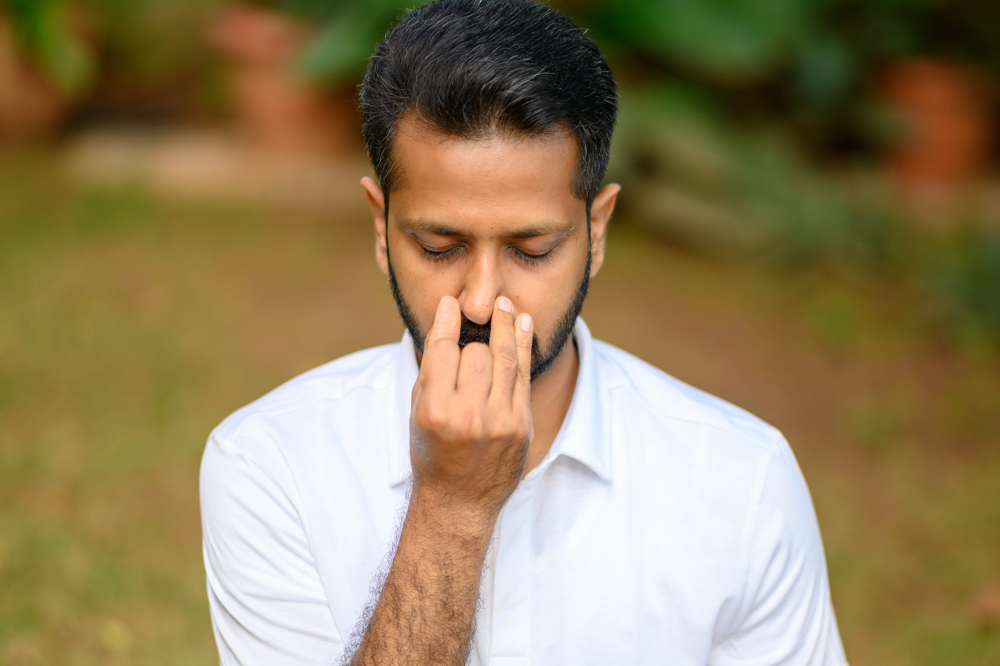
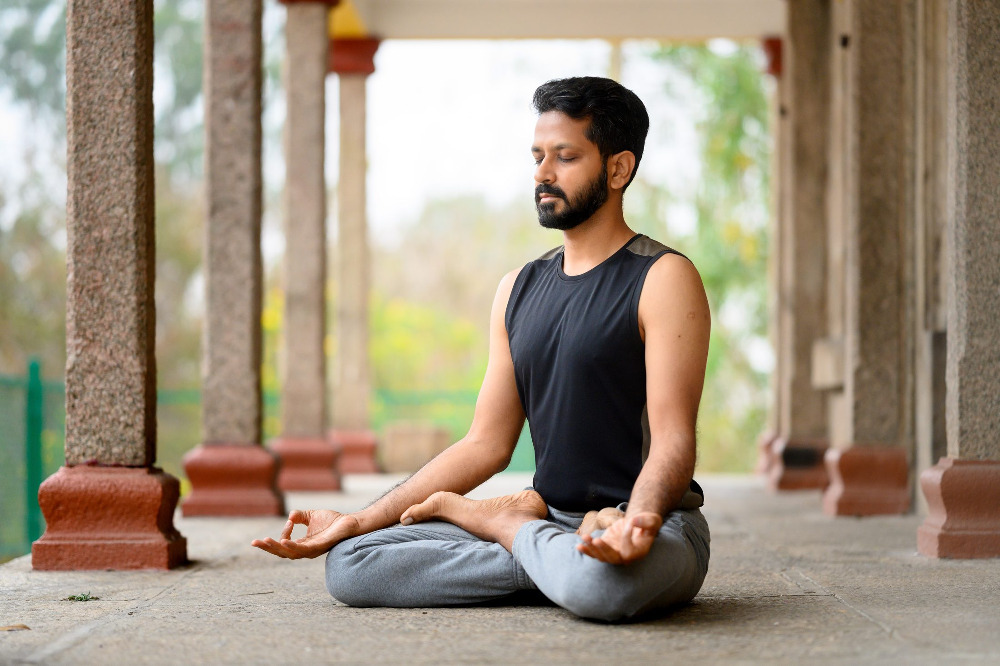

Mysore & live online
Prana Urja An education in breath.
A progressive study of classical pranayama that develops sensitivity, steadiness and an independent personal practice.

01 / The breath
Breath is studied, felt and understood.
Prana Urja is a structured exploration of pranayama. Rather than collecting techniques, students learn how breath responds to posture, attention, rhythm and the state of the nervous system.
The practices develop gradually across the week. Clear explanation is followed by direct experience, observation and time for the effects to settle. This helps you recognise which methods serve you and how to practise them safely.
Each session builds toward greater ease, capacity and sensitivity—qualities that can support meditation, asana and everyday life.
- 01Method: learn the structure and purpose of each technique.
- 02Experience: notice the physical and mental response.
- 03Independence: build a practice you can continue with clarity.


Who it is for
Breathwork with depth and direction.
- Beginners who want a clear and progressive introduction
- Yoga practitioners and teachers deepening their understanding
- People seeking a steadier relationship with stress and energy
- Anyone ready to establish a consistent daily rhythm